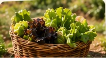
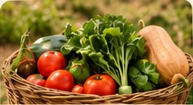
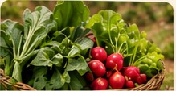
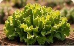
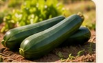
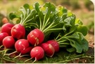

Cesta Clásica
Productos de temporada
Cooperativa de la Sierra Norte de Madrid
Productos frescos de nuestra sierra,
con el sello de cuatro productores locales.
1. Descubre
nuestros productos
2. Elige tu cesta
o productos
3. Recibe tu pedido
en Madrid y la sierra

Productos de temporada

Más variedad, para todos

Lo mejor de la huerta
Temporada

Temporada
Temporada

Temporada

Temporada
Cuatro familias, una cooperativa para llevar lo mejor de la sierra a tu mesa.
Conocer a nuestros productores